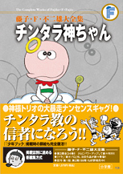

| |

＜『少年ブック』掲載集＞
定価1,575円（税込）
A5判／234ページ
好評発売中！
※「チンタラ神ちゃん」は、
藤子不二雄A氏との共著です。
★は初めて単行本に収録される
作品です。
※収録内容は変更になる
場合があります。

|
| チンタラ神ちゃん登場（1967年1月号） |
| チンタラ教に入ろうヨ（1967年2月号） |
| チンタラアルバイト（1967年3月号） |
| 神ちゃんの大好物は…（1967年4月号） |
| チンタラコマーシャル（1967年5月号） |
| チンタラ怪獣（1967年6月号） |
| 神ちゃんパン屋になる（1967年7月号） |
| 南の島で海水浴しよう（1967年8月号） |
| ★神ちゃんハイキングへ行く（1967年9月号） |
| クルパー教（1967年10月号別冊付録） |
| 神ちゃん赤んぼうになる（1967年11月号） |
| チンタラスマスで祝おう（1967年12月号別冊付録） |
|